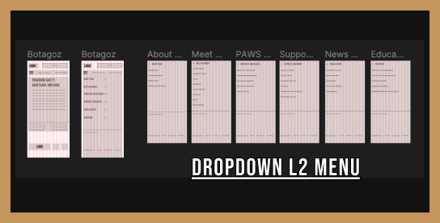
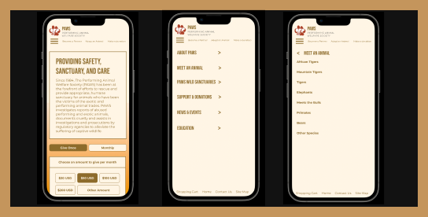

L1 Navigation Wireframes

Mockups

The Performing Animal Welfare Society is a not for profit organization that was created to provide sanctuary to abused, abandoned, and retired captive wildlife. We have observed that the information on our website appears outdated and overwhelming, which is causing visitors to seek out other causes to support instead.
We believe there is an opportunity to improve our website (for both desktop and mobile view) so that patrons have a more successful experience leading to increased donations.
UX Researcher, UI designer for Navigation L1, L2, Utility menu for Desktop and iOS Mobile Mockups
Planning & Research - Miro, Google Workplace. Wireframing, Prototyping, & Design - Figma, Invision, Adobe CC. Project Management & Interviews - Trello, Slack, Zoom.